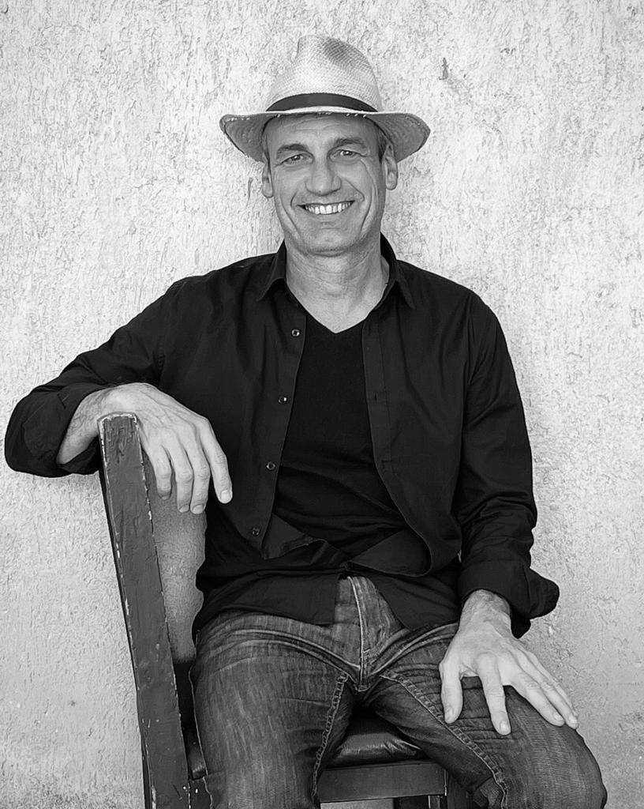

diego
petrate
{{ heroCapA }}
{{ heroCapB }}
{{ t.heroTitle }}
{{ t.heroText }}
{{ t.navWork }}
{{ countLabel }}
{{ p.num }}
{{ p.name }}
{{ p.place }}
{{ p.catLabel }}
{{ p.tag }}
{{ t.navStudio }}
Foto Gaby Herbstein

{{ t.bioLead }}
{{ t.bio1 }}
{{ t.bio2 }}
- {{ f.k }}
- {{ f.v }}
{{ t.navCareer }} · 1999–2005
Frank Gehry & Partners, Los Angeles
{{ t.gehryText }}
{{ g.n }}
{{ g.p }}
{{ g.y }}
{{ f.n }}{{ f.r }}
{{ f.p }}
{{ f.y }}
{{ t.navTeach }}
{{ t.teachTitle }}
{{ x.n }}
{{ x.y }}
{{ x.r }}